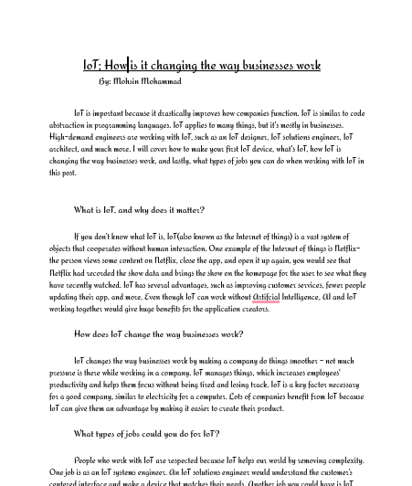

|  |
Project Name: SliconValley4u ioT blogDate of Project: 2/27/22 |
Project 1: (click on the image to read the blog)
While being in the siliconvalley4u academy, I was instructed to create a blog that is about technology. I’ve chosen to write about IoT because I think that it would be very interesting. The objective of my blog is to explain to readers what IoT basically is and how it can help huge companies. I believe that this would be a very important topic because IoT drastically improves the way businesses can easily store and transfer data. My role for this blog is being the writer. By writing this interesting blog about IoT, I’m able to deepen my understanding of ioT and discover new uses and facts for it that I wasn’t aware of before. Some challenges I’ve overcome are the planning process of writing the blog.
 |
Project Name: 8-ball projectCourse: Computer Science EssientialsDate of Project: 10/24/21 |
Project 2: (click on the image to see the project block view and display) and click This Link for file
While being in Computer Science Essentials, I was instructed to work with a collaborator on making our own app using Mit App Inventor. After some brainstorming, We have decided to work on a 8-ball project. The objective of the 8-ball app is to function just like a 8-ball. we both tried to come up with ideas such as the design of our app and how it should function. We both equally contributed for this project. We had some challenges during the construction of the project, such as how to get a design effect to work properly and how to get random answers to appear with each shake. After some time coming up with a solution together, we were able to reach our desired goal, which is to make a 8-ball app.